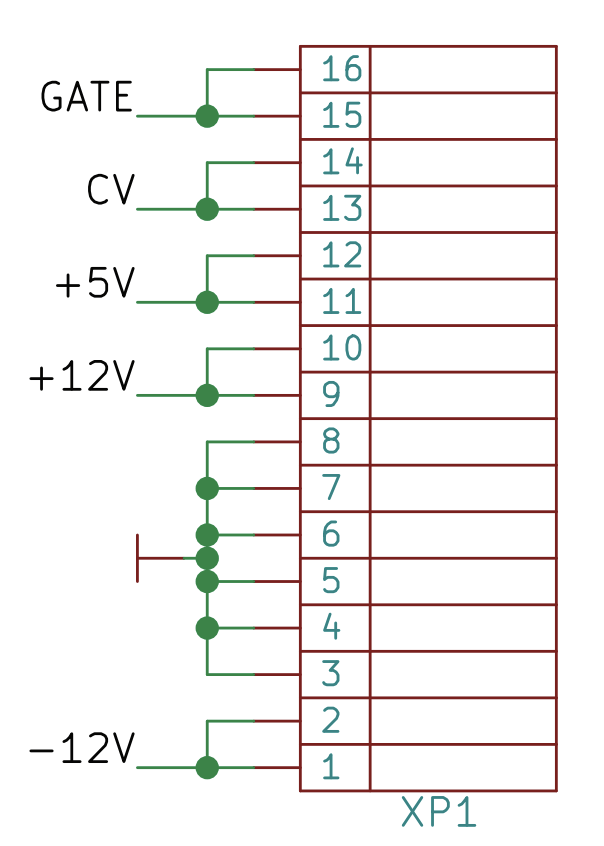
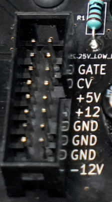

Building a Synthesizer, Glossary
Glossary and Electrical Connections
- Introduction: The World of DIY Synthesizers
- 1: The mki x es.EDU DIY System
- 2: Building the Power Supply
- 3: Breadboarding the VCO
- 4: A Gentle Introduction to Op Amps
- 5: Building the VCO
- 6: The Logic Circuits Model of Computation
- 7: Building the Mixer
- 8: Building the Envelope Generator
- Glossary and Electrical Connections
If you play synths, are quite familiar with modular synths, and already understand why you can’t just plug a keyboard into a modular synth and expect stuff to work, or if you don’t care much about how modular synths work then feel free to skip this article.
A Glossary
DIY stands for “Do It Yourself,” and, in this context, refers to building synths either from a kit or from just plain electronic components.
A modular synth is one which is comprised of separate modules, such as oscillators and filters, which can usually be purchased separately and interconnected using patch cables. Most big-name synths that you buy from Roland, Korg, Yamaha, etc., today are not modular. Modular does not mean “any synth with patch cables,” however. There are synths called “semimodular” synths which can be patched but are part of a single, inseparable case and which are typically “normalled” together (that is, the synth will make a sound without any patch cables, and then you can change the sound via patching). A modular synthesizer is distinguished by the ability to mix and match modules from various manufacturers to produce a tone.
A monophonic synth can only play one note at a time, like a trumpet. A polyphonic synth can play multiple notes at a time, like a piano. Polyphonic synths have a limited number of “voices,” which is very roughly the number of notes they can play at once. Polyphonic synths can usually play more than one preset at a time, perhaps splitting the keyboard between two or more instruments.
Modular synths are monophonic, for the most part, because each module usually handles a single sound at a time. A polyphonic synth, on the other hand, will generally allow the player to create a preset once and play chords with it, by default. It’s pretty common to use multiple modules to make multiple sounds, concurrently, but this is closer to having multiple monophonic synths than to having a single, polyphonic synth.
MIDI stands for Musical Instrument Digital Interface. It’s an old, slow networking protocol which was designed to be the cheapest possible solution to a particular problem in the 1980s: How to play one polyphonic synthesizer using an external keyboard or sequencer. At one point in time (also during the 80s), it was accurately described as “the local area network with the world’s larget installed user base.” It’s hard to overstate the effect that MIDI had on music. For many, it made “home studios” possible. Today it’s still in use, almost entirely unchanged, although it’s being ever-so-gradually edged out by USB.
An analog synthesizer makes sounds using analog circuitry, as opposed to a digital synthesizer, which makes sounds using digital signal processing. Modular synth components tend to be analog, but there’s no rule which says they have to be, and digital modules do exist. I mention this because it’s orthogonal to the interface. In other words, MIDI is a digital interface which can be used to control either analog or digital synths. Voltage control is an analog interface which can be used to control either analog or digital synths or modules.
Voltage Control
Most commercial synths include a MIDI interface, with the exception of modular gear which more often uses an even older… well… “standard” is not quite the right word. Anyway, you can connect modules together using an analog protocol called “Voltage Control” (or “CV/Gate” after the specific connections). You can also connect a keyboard or sequencer to a modular synth using the same connections, which might be useful if your keyboard or hardware sequencer has CV/Gate outputs (some do, some don’t) and your modular synth does not have a MIDI interface… module.
These are analog signals, and will allow you, if you plan carefully, to connect two modules together and probably control them with a keyboard or external sequencer, although with greatly limited features in comparsion with a keyboard-to-synth MIDI connection. “Greatly limited” here means that features of MIDI such as support for chords, multiple channels over a single wire, and such niceties as keyboard velocity and aftertouch, either don’t exist at all or require additional work to support.
Taking a simple example, where you want to plug a keyboard into a modular synth, well, you have to look and consider your options. If your keyboard has only a MIDI output, then you must use a MIDI-to-CV module. If your keyboard has outputs labeled “CV,” “Gate,” “Pitch,” “Trigger,” “Mod,” or similar, then you can probably connect these directly to some modules on a modular synth. However, the signals carried on these outputs can vary, depending upon who implemented them.
{kind=link}
On a modular synthesizer, there are three general kinds of signals: CV/pitch, gate/trigger, and audio. Although note that it’s generally fine, encouraged, even to plug, say, the CV output of one module into the audio input of another module, or whatever. In general you can plug anything into anything, although there is no guarantee it will make a pleasing sound!
CV (or Pitch)
A pitch Control Voltage (CV) is expected, in the Eurorack world (although not necessarily in modular synthesis in general), to be 1V per octave. This mostly means that an A1 (the note “A” in the second octave of a standard, 88 key piano) is 1V and an A5 is 5V. Mostly! You may encounter other “encodings” of pitch, such as those where the voltage goes into the negative. But 1V/octave, starting at 0V is the system most commonly used and that’s what the mks x es.EDU modules use.
Given that the CV will have a voltage corresponding to the note that you’re playing, you might ask, “But what if I play a chord?” Simple! You don’t get to encode chords with CV. Most keyboards will just choose the highest or most recent note that you’ve played and set the CV to that. The expectation is that you’re going to use this connection with a monophonic synthesizer or with a single modular “voice.” If you wanted to play a three-note chord on a keyboard and have that voiced by a modular synth, you would need three separate CV and Gate outputs from your keyboard, and three separate oscillators on your modular synth. I’ve never seen a keyboard with three CV outputs, although you can buy a MIDI-to-CV interface which has more.
[In 1968, Wendy Carlos released the album Switched-On Bach, where she played many of Bach’s (very much polyphonic) compositions on the (very much monophonic) Moog synthesizer. How did she do this? Simple, she played one voice at a time into an 8-track tape recorder. It’s an incredible feat of musicianship that the result sounds so good!]
Mod
It’s not uncommon for keyboards to have an output or two called “Mod.” Mod is electrically the same as CV/Pitch, but instead of sending pitch there the keyboard can translate some other MIDI continous controller to a voltage sent to that jack. Judging by the name I guess the expectation is that you’ll assign the mod wheel, but it could be set to anything. From there it translates whatever you’ve set it to a 0-5V output on the Mod jack.
{kind=link}
Other CV
If you just say “CV” and don’t say anything else, people will tend to presume you are talking about pitch CV (e.g., on the Novation back panel above the “CV” jack carries pitch information). But as seen with “Mod,” other information can be carried using a Control Voltage as well. The Moog Little Phatty seen at right will take Volume and Filter controls as well as pitch and gate over its CV inputs.
{kind=link}
Gate or Trigger
In addition to Control Voltage you may have noticed a “Gate” output. This is a simple on and off, binary signal (where “on” might be anywhere between 5V and 10V, and “off” is 0V), representing whether the key is pressed/on or released/off. A few devices, such as the Minimoog, have “Trigger” outputs instead of or in addition to Gate; trigger is a short pulse which happens at the start of a note and returns quickly to zero, in contrast to Gate which stays high as long as the note is played.
Why not put pitch CV and Gate on the same signal? One reason is because CV goes down to 0. Another reason is that you might want to send them to different modules, say, a pitch CV to an oscillator and gate to an envelope generator.
Eurorack
Not all modules play nicely together, but a plurality of modules sold today follow the Eurorack, um, again, not “standard,” exactly. Suffice it to say that if you buy two Eurorack modules and play with them enough, you can probably get them to do something interesting. Anyhow, Eurorack includes both a common physical form factor, CV voltage (mostly!), and power requirements. Usually.
In the absence of a “Eurorack standard,” most makers take a “look at what Doepfer did on the A-100 and do something similar” approach. “Eurorack compatible” synth modules tend to follow the following conventions:
The physical form factor, or the size of the modules. Eurorack modules are (mostly!) 3U (three rack units, or 128.5 mm) high, and their widths are “quantized” by “HP,” or Horizontal Pitch units. This means they are usually some multiple of 5.08 mm wide.
The power requirements. The Eurorack power bus has a 16 pin connector for each module. However, it’s very, very common for modules to not use the first 6 pins and only have a 10-pin connector on the “module” end of the power cable.
  At the left is a pinout from the mks x es.EDU schematic. To the right is a picture of one of the 14 sockets in the mks x es.EDU power supply, which you can connect to a single module.
{kind=link}
{kind=link}
The first thing you’ll notice is there’s a lot of redundancy there. The connectors are 16 pins, organized into two columns of eight pins each. Each two-pin “row” carries exactly the same signal; they are connected together. Furthermore, there are three rows (six pins total) of ground pins, which, again, are connected together.
The power provided by the bus is +12 and -12 VDC. Some have argued that it would have been better if it specified ±15VDC, but Eurorack really was aligned to the specific needs of one system, the Doepfer A-100, not modular synths in general.
Finally, there are CV, Gate, and +5V power wires. Most modules do not use, and don’t even include wires for, the Gate and CV on the bus (expecting you to instead connect Gate and CV via jacks on the front of a module), and +5V connections. I guess the idea behind the Gate and CV connections is you could plug a keyboard or MIDI interface into these and then have the signal “normalled” (connected by default, until you plugged a patch cable in elsewhere) to the CV/gate input on some modules. At any rate, not many modules use this feature at all, requiring you to connect the Gate/CV through the front panel of the module. Similarly, +5V power is simply not needed by most modules.
There is a EuroSynth specification which attempts to take the mishmash of Eurorack informal specs and formalize them. Needless to say, essentially no manufacturers have adopted this spec.
In the next post we will look at the mki x es.EDU DIY System in more detail.
Resources
- The Construction Details document on Doepfer’s site gives information about the physical form factor of Eurorack.
- The Technical Details document on Doepfer’s site is a good overview of volatage control in general. It’s also informative if you’d like to know more about the A-100, which other “Eurorack” manufacturers are using as an example.